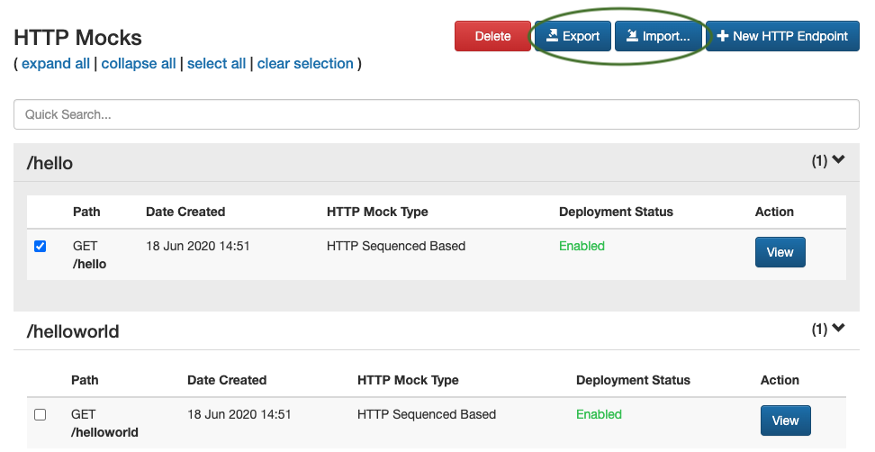
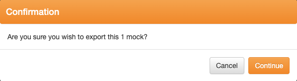
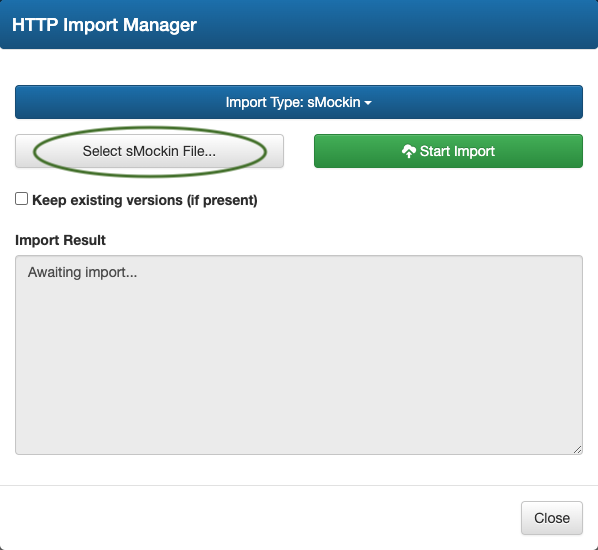
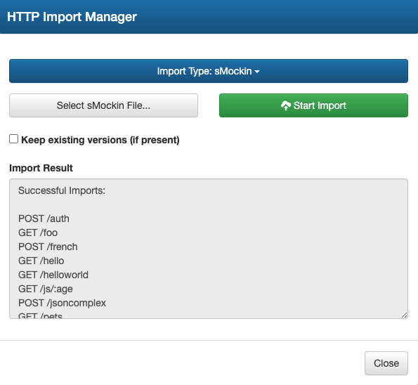

sMockin provides import / export functionality from the dashboard to help you manage, share and store your mocks.

Exporting mocks can be done by simply selecting the checkbox alongside each mock and clicking the
Export button.

This will produce a zip file which will be made available to download.
Importing mocks is simply case of clicking on the
Import button on the dashboard, selecting
your previously exported zip archive file and then clicking the
Start Import button.
In the event that you already have mocks using the same endpoint name, there is an option to keep these. Otherwise these will be over written by default.

Once the file import has completed, a summary of which mocks were successfully and unsuccessfully imported is presented.
